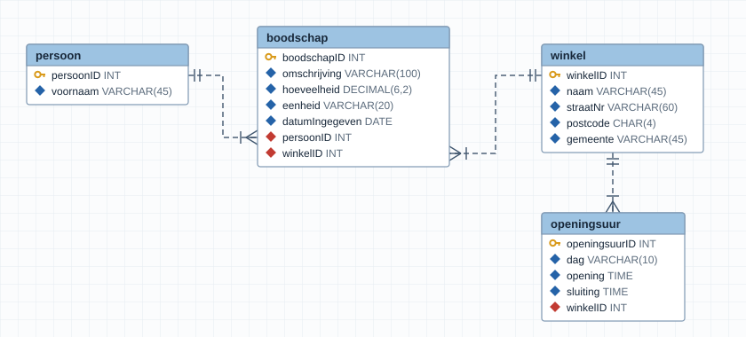
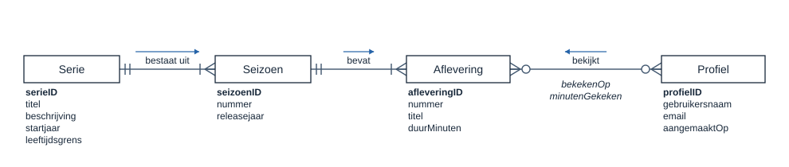
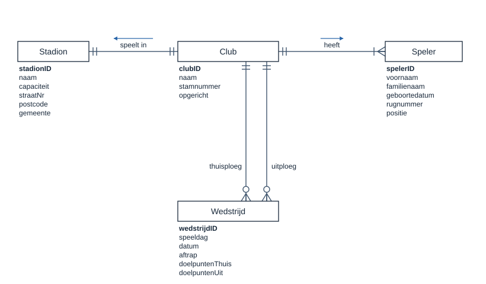

Nu passen we alles zelf toe. De oefeningen worden stap voor stap moeilijker: eerst krijgen we het ontwerp, daarna enkel het ERD, en op het einde ontwerpen we alles zelf.
oefeningenwat oefenen we?
We implementeren zelfstandig een relationele databank op basis van een ontwerp.
We zetten een ERD om naar een model in Workbench.
We schrijven insert-scripts met realistische testgegevens.
Zo pakken we elke oefening aan
Ontwerp. Lees de opdracht, bekijk of teken het ERD en noteer de tabellen in de notatie van de cursus.
Model. Nieuw model in Workbench, schema hernoemen, tabellen en relaties tekenen. Bewaar als oefN_naam.mwb.
Forward Engineer. Bewaar het script bij de stap Script nakijken met Save to File… als oefN_naam_create.sql.
Gegevens. Voer het testscript uit, of schrijf zelf een insert-script oefN_naam_insert.sql.
Testen. Loopt alles zonder fouten? Controleer met SELECT * FROM … en test minstens één keer de referentiële integriteit.
Moeilijkheid: opwarmer, gemiddeld, uitdaging.
Oefening 1: Boodschappenlijst
Schema: boodschappen
Gegeven: volledig ontwerp en testscript
Nieuw: zelfstandig werken
Herinner je de opdracht uit de les: onze ouders willen een databank voor hun boodschappenlijstje. Ze winkelen in verschillende winkels, waarvan we naam en adres bewaren. Van een boodschap bewaren we een korte omschrijving, de hoeveelheid en de eenheid (stuk, liter, kilogram …), wie ze ingaf en op welke datum, en in welke winkel we ze kopen. Extra: van elke winkel bewaren we de openingsuren.
Het ontwerp is gegeven. Bouw het exact na: het testscript gebruikt deze namen.

Het model voor boodschappen. De tabel openingsuur is de extra opdracht.
Tabel
Kolommen (PS eerst, RS cursief)
persoon
persoonID INT AI, voornaam VARCHAR(45)
winkel
winkelID INT AI, naam VARCHAR(45), straatNr VARCHAR(60), postcode CHAR(4), gemeente VARCHAR(45)
openingsuurID INT AI, dag VARCHAR(10), opening TIME, sluiting TIME, winkelID
Alle kolommen zijn verplicht (NN). Alle relaties zijn 1:n.
Wat doen we?
Bouw het model oef1_boodschappen.mwb en zet het met Forward Engineer om naar de databank boodschappen.
Download het testscript oef1_boodschappen_test.sql en voer het uit. Verwacht: 4 personen, 4 winkels, 10 boodschappen en 6 openingsuren. Een fout betekent dat je model afwijkt van het ontwerp: de melding vertelt waar.
Voeg met een eigen script vijf boodschappen toe die jouw gezin deze week nodig heeft, en de openingsuren van een winkel bij jou in de buurt.
Denkvraag: waarom staan de openingsuren in een aparte tabel?
Een winkel heeft per dag andere openingsuren: dat is een repeterende groep tegenover de primaire sleutel winkelID. Kolommen als maandag, dinsdag … in winkel zouden vaak leeg blijven en zijn lastig te bevragen. Volgens de eerste normaalvorm (cursus 4.4) brengen we de repeterende groep onder in een eigen tabel.
Hint: waarom DECIMAL(6,2) voor hoeveelheid?
Hoeveelheden zijn niet altijd gehele getallen: 1.5 kilogram bananen, 0.75 kilogram kippenfilet. DECIMAL(6,2) bewaart tot 9999.99, exact.
Oefening 2: Streamingdienst Kijkbox
Schema: kijkbox
Gegeven: ERD en testscript
Nieuw: zelf omzetten en datatypes kiezen
Kijkbox is een kleine streamingdienst. Een serie heeft een titel, een beschrijving, een startjaar en een leeftijdsgrens. Een serie bestaat uit één of meer seizoenen (nummer, releasejaar) en elk seizoen bevat één of meer afleveringen (nummer, titel, duur in minuten). Gebruikers maken een profiel aan met een unieke gebruikersnaam en een uniek e-mailadres. Kijkbox houdt bij welk profiel welke aflevering bekeek, wanneer, en hoeveel minuten. Een profiel kan dezelfde aflevering meerdere keren bekijken: elke kijkbeurt wordt bewaard.

Het ERD van Kijkbox in de notatie van de cursus.
Wat doen we?
Zet het ERD om naar een databaseontwerp in de notatie van de cursus. Noem de tabel voor de relatie bekijktkijkbeurt, met als PS kijkbeurtID.
Kies voor elke kolom een datatype en bepaal NN en UQ.
Bouw het model oef2_kijkbox.mwb en zet het om naar de databank kijkbox. Volg strikt de naamgevingsafspraken: tabelnamen in kleine letters, attribuutnamen zoals in het ERD, RS met dezelfde naam als de PS.
Voer het testscript oef2_kijkbox_test.sql uit. Verwacht: 3 series, 4 seizoenen, 14 afleveringen, 4 profielen en 12 kijkbeurten.
Voeg je eigen favoriete serie toe (echt of verzonnen) met één seizoen en drie afleveringen, en een profiel voor jezelf dat twee afleveringen bekeek.
Hint: welke relaties leggen we?
bestaat uit en bevat zijn 1:n-relaties: seizoen krijgt serieID en aflevering krijgt seizoenID. bekijkt is een m:n-relatie mét attributen: maak zelf de tabel kijkbeurt met kijkbeurtID, bekekenOp en minutenGekeken, en leg twee 1:n-relaties (naar profiel en naar aflevering). Net zoals optreden bij het festival.
Hint: datatypes
beschrijving kan lang zijn: kies TEXT of een ruime VARCHAR. Met VARCHAR(45) krijg je fout 1406 in het testscript.
startjaar en releasejaar: YEAR of INT.
bekekenOp bevat datum én tijd: DATETIME.
aangemaaktOp: DATE.
Oefening 3: Esports-toernooi
Schema: esports
Gegeven: enkel de probleemstelling
Nieuw: zelf het ERD tekenen en een volledig insert-script schrijven
De leerlingenraad organiseert een esports-competitie tussen scholen.
Een game heeft een titel, een uitgever en een PEGI-leeftijd.
Een team heeft een unieke naam, een unieke tag van hoogstens vijf tekens (zoals KKB) en een oprichtingsdatum.
Van een speler bewaren we een unieke gamertag, voornaam, familienaam, geboortedatum en e-mailadres. Een speler zit in hoogstens één team. Sommige spelers zijn free agent: ze hebben (nog) geen team.
Een toernooi heeft een naam, een datum, een locatie en een maximaal aantal teams. Elk toernooi wordt in precies één game gespeeld.
Teams schrijven in voor toernooien. Per inschrijving bewaren we de inschrijvingsdatum, de eindplaats en het gewonnen prijzengeld. Zolang het toernooi niet gespeeld is, is de eindplaats nog onbekend. Een team schrijft maar één keer in voor hetzelfde toernooi.
Wat doen we?
Teken het ERD (op papier of digitaal) en zet het om naar een databaseontwerp.
Bouw het model oef3_esports.mwb en zet het om naar de databank esports.
Schrijf oef3_esports_insert.sql met minstens 3 games, 6 teams, 20 spelers (waarvan 2 free agents), 4 toernooien en 12 inschrijvingen. Bij minstens 4 inschrijvingen is de eindplaats nog onbekend.
Test de integriteit: probeer een inschrijving voor een team dat niet bestaat, en probeer een game te verwijderen waarvoor een toernooi gepland is.
Hint: optionele relatie
Free agents hebben geen team: de RS teamID in speler moet leeg kunnen blijven. Vink bij de relatie Mandatory uit aan de kant van Referenced Table (zoals bij campingzone in stap 5). In het insert-script schrijven we dan NULL.
Hint: welke primaire sleutel voor de inschrijving?
Een team schrijft maar één keer in voor hetzelfde toernooi. De combinatie (teamID, toernooiID) is dus altijd uniek en kan de samengestelde PS zijn. Vergelijk met optreden: daar kon dezelfde combinatie meermaals voorkomen. Een surrogaatsleutel inschrijvingID is ook goed, als je dat kan verantwoorden.
Oefening 4: Voetbalcompetitie
Schema: voetbal
Gegeven: ERD
Nieuw: een 1:1-relatie en twee relaties naar dezelfde tabel
Een regionale voetbalbond houdt de competitie bij. Elke club heeft een unieke naam, een uniek stamnummer en een oprichtingsjaar, en speelt in precies één eigen stadion. Een club heeft spelers. Een wedstrijd wordt gespeeld op een speeldag, datum en aftrapuur tussen een thuisploeg en een uitploeg. Na de wedstrijd vullen we het aantal doelpunten van beide ploegen in.

Het ERD van de voetbalcompetitie. Tussen Club en Wedstrijd lopen twee relaties.
Wat doen we?
Zet het ERD om naar een databaseontwerp. Let op de 1:1-relatie en de twee relaties tussen club en wedstrijd.
Bouw het model oef4_voetbal.mwb en zet het om naar de databank voetbal.
Schrijf oef4_voetbal_insert.sql met minstens 4 clubs met hun stadion, 12 spelers en 6 wedstrijden, waarvan 2 nog niet gespeeld.
Test: kan je twee clubs in hetzelfde stadion laten spelen? Dat zou niet mogen.
Hint: de 1:1-relatie club en stadion
Gebruik Place a New 1:1 Non-Identifying Relationship: klik eerst op club, dan op stadion. De club krijgt een RS stadionID. Vink in de tabeleditor ook UQ aan bij stadionID. Zonder UQ kunnen twee clubs naar hetzelfde stadion verwijzen, en is het in de databank toch een 1:n-relatie.
Hint: twee relaties naar dezelfde tabel
Leg twee keer een 1:n-relatie: klik telkens eerst op wedstrijd, dan op club. Omdat de kolom clubID al bestaat, geeft Workbench de tweede RS een andere naam. Hernoem de kolommen naar thuisclubID en uitclubID. Een RS hoeft dus niet dezelfde naam te hebben als de PS waarnaar ze verwijst.
Hint: doelpunten van een wedstrijd die nog niet gespeeld is
doelpuntenThuis en doelpuntenUit blijven leeg tot de wedstrijd gespeeld is: laat NN uit en schrijf NULL in het script. Let op: 0 zou betekenen dat het 0-0 werd.
Oefening 5: Van cursus naar databank
Schema: kies zelf een gepaste naam
Gegeven: je eigen ERD uit de cursus
Nieuw: een eigen ontwerp implementeren
In de cursus Data-ontwerp (hoofdstuk 2.8) tekenden we al heel wat ERD's. Kies er twee uit deze lijst en implementeer ze: model, Forward Engineer en een insert-script met minstens vijf rijen per tabel.
Oefening 5: Atletiek
Oefening 6: KVLV
Oefening 7: Sweet Paradise
Oefening 8: Olympisch comité
Oefening 10: Consultants
Oefening 13: Bibliotheek (vergelijk met het uitgewerkte voorbeeld in 3.4)
Oefening 6: Eindopdracht, een eigen ontwerp
Schema: kies zelf
Gegeven: niets, enkel de eisen
Nieuw: alles zelf, van probleemstelling tot test
We ontwerpen en implementeren een databank over een onderwerp dat we zelf kiezen. Inspiratie:
Een jeugdbeweging: leden, takken, leiding, activiteiten en inschrijvingen.
Een sneakerwebshop: producten, maten, klanten, bestellingen en bestellijnen.
De schoolfuif: tickettypes, verkochte tickets, vrijwilligers en shiften.
Je gamecollectie: games, platformen, vrienden en uitleningen.
Een sportclub: leden, ploegen, trainingen en aanwezigheden.
Eisen
Minstens 5 tabellen.
Minstens één 1:n-relatie, één m:n-relatie mét attributen en één optionele relatie.
Bewust gekozen datatypes, en NN en UQ waar dat zinvol is.
Per refererende sleutel een verantwoorde keuze voor ON DELETE.
Een insert-script dat zonder fouten loopt na Forward Engineer, met minstens 10 rijen in de belangrijkste tabellen en 5 in de andere.
Wat leveren we in?
Een probleemstelling van 5 tot 10 zinnen, zoals in de cursus.
Het ERD en het databaseontwerp in de notatie van de cursus.
Het model .mwb.
Het create-script (bewaard bij Forward Engineer) en het insert-script.
Een korte reflectie: verantwoord drie ontwerpkeuzes (bijvoorbeeld een PS, een datatype en een ON DELETE).
Waarop letten we bij de evaluatie?
Onderdeel
We kijken na of …
Gewicht
Ontwerp
het ERD de probleemstelling correct weergeeft, met juiste cardinaliteit en optionaliteit
25 %
Model
tabellen, sleutels, relaties en datatypes correct zijn en de naamgeving klopt
30 %
Gegevens
het insert-script foutloos loopt, in de juiste volgorde, met realistische gegevens
25 %
Integriteit
de keuzes voor ON DELETE verantwoord en getest zijn
10 %
Afwerking
alle bestanden aanwezig zijn en de reflectie de keuzes duidelijk uitlegt